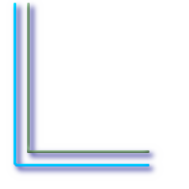
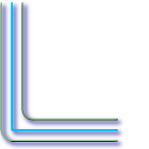
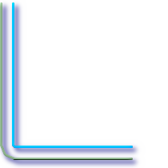
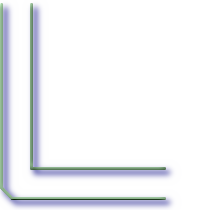

Name
ST_OffsetCurve — Return an offset line at a given distance and side from an input line. Useful for computing parallel lines about a center line
Synopsis
geometry ST_OffsetCurve(geometry line, float signed_distance, text style_parameters='');
Description
Return an offset line at a given distance and side from an input line. All points of the returned geometries are not further than the given distance from the input geometry.
For positive distance the offset will be at the left side of the input line and retain the same direction. For a negative distance it'll be at the right side and in the opposite direction.
Availability: 2.0 - requires GEOS >= 3.2, improved with GEOS >= 3.3
The optional third parameter allows specifying a list of blank-separated key=value pairs to tweak operations as follows:
'quad_segs=#' : number of segments used to approximate a quarter circle (defaults to 8).
'join=round|mitre|bevel' : join style (defaults to "round"). 'miter' is also accepted as a synonym for 'mitre'.
'mitre_limit=#.#' : mitre ratio limit (only affects mitred join style). 'miter_limit' is also accepted as a synonym for 'mitre_limit'.
Units of distance are measured in units of the spatial reference system.
The inputs can only be LINESTRINGS.
Performed by the GEOS module.
![[Note]](images/note.png) | |
This function ignores the third dimension (z) and will always give a 2-d result even when presented with a 3d-geometry. |
Examples
Compute an open buffer around roads
SELECT ST_Union( ST_OffsetCurve(f.the_geom, f.width/2, 'quad_segs=4 join=round'), ST_OffsetCurve(f.the_geom, -f.width/2, 'quad_segs=4 join=round') ) as track FROM someroadstable;
15, 'quad_segs=4 join=round' original line and its offset 15 units.
SELECT ST_AsText(ST_OffsetCurve(ST_GeomFromText( 'LINESTRING(164 16,144 16,124 16,104 16,84 16,64 16, 44 16,24 16,20 16,18 16,17 17, 16 18,16 20,16 40,16 60,16 80,16 100, 16 120,16 140,16 160,16 180,16 195)'), 15, 'quad_segs=4 join=round')); --output -- LINESTRING(164 1,18 1,12.2597485145237 2.1418070123307, 7.39339828220179 5.39339828220179, 5.39339828220179 7.39339828220179, 2.14180701233067 12.2597485145237,1 18,1 195)
|  -15, 'quad_segs=4 join=round' original line and its offset -15 units
SELECT ST_AsText(ST_OffsetCurve(geom, -15, 'quad_segs=4 join=round')) As notsocurvy FROM ST_GeomFromText( 'LINESTRING(164 16,144 16,124 16,104 16,84 16,64 16, 44 16,24 16,20 16,18 16,17 17, 16 18,16 20,16 40,16 60,16 80,16 100, 16 120,16 140,16 160,16 180,16 195)') As geom; -- notsocurvy -- LINESTRING(31 195,31 31,164 31)
|
double-offset to get more curvy, note the first reverses direction, so -30 + 15 = -15
SELECT ST_AsText(ST_OffsetCurve(ST_OffsetCurve(geom, -30, 'quad_segs=4 join=round'), -15, 'quad_segs=4 join=round')) As morecurvy FROM ST_GeomFromText( 'LINESTRING(164 16,144 16,124 16,104 16,84 16,64 16, 44 16,24 16,20 16,18 16,17 17, 16 18,16 20,16 40,16 60,16 80,16 100, 16 120,16 140,16 160,16 180,16 195)') As geom; -- morecurvy -- LINESTRING(164 31,46 31,40.2597485145236 32.1418070123307, 35.3933982822018 35.3933982822018, 32.1418070123307 40.2597485145237,31 46,31 195)
|  double-offset to get more curvy,combined with regular offset 15 to get parallel lines. Overlaid with original.
SELECT ST_AsText(ST_Collect( ST_OffsetCurve(geom, 15, 'quad_segs=4 join=round'), ST_OffsetCurve(ST_OffsetCurve(geom, -30, 'quad_segs=4 join=round'), -15, 'quad_segs=4 join=round') ) ) As parallel_curves FROM ST_GeomFromText( 'LINESTRING(164 16,144 16,124 16,104 16,84 16,64 16, 44 16,24 16,20 16,18 16,17 17, 16 18,16 20,16 40,16 60,16 80,16 100, 16 120,16 140,16 160,16 180,16 195)') As geom; -- parallel curves -- MULTILINESTRING((164 1,18 1,12.2597485145237 2.1418070123307, 7.39339828220179 5.39339828220179,5.39339828220179 7.39339828220179, 2.14180701233067 12.2597485145237,1 18,1 195), (164 31,46 31,40.2597485145236 32.1418070123307,35.3933982822018 35.3933982822018, 32.1418070123307 40.2597485145237,31 46,31 195))
|
 15, 'quad_segs=4 join=bevel' shown with original line
SELECT ST_AsText(ST_OffsetCurve(ST_GeomFromText( 'LINESTRING(164 16,144 16,124 16,104 16,84 16,64 16, 44 16,24 16,20 16,18 16,17 17, 16 18,16 20,16 40,16 60,16 80,16 100, 16 120,16 140,16 160,16 180,16 195)'), 15, 'quad_segs=4 join=bevel')); -- output -- LINESTRING(164 1,18 1,7.39339828220179 5.39339828220179, 5.39339828220179 7.39339828220179,1 18,1 195)
|  15,-15 collected, join=mitre mitre_limit=2.1
SELECT ST_AsText(ST_Collect( ST_OffsetCurve(geom, 15, 'quad_segs=4 join=mitre mitre_limit=2.2'), ST_OffsetCurve(geom, -15, 'quad_segs=4 join=mitre mitre_limit=2.2') ) ) FROM ST_GeomFromText( 'LINESTRING(164 16,144 16,124 16,104 16,84 16,64 16, 44 16,24 16,20 16,18 16,17 17, 16 18,16 20,16 40,16 60,16 80,16 100, 16 120,16 140,16 160,16 180,16 195)') As geom; -- output -- MULTILINESTRING((164 1,11.7867965644036 1,1 11.7867965644036,1 195), (31 195,31 31,164 31))
|